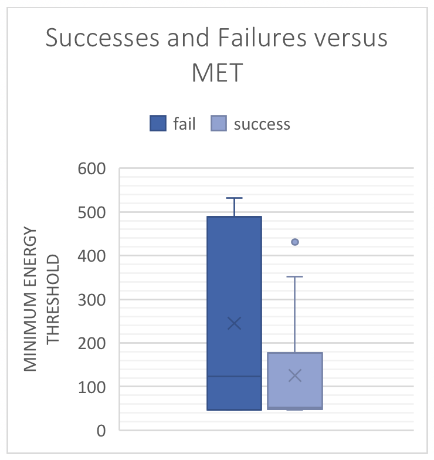
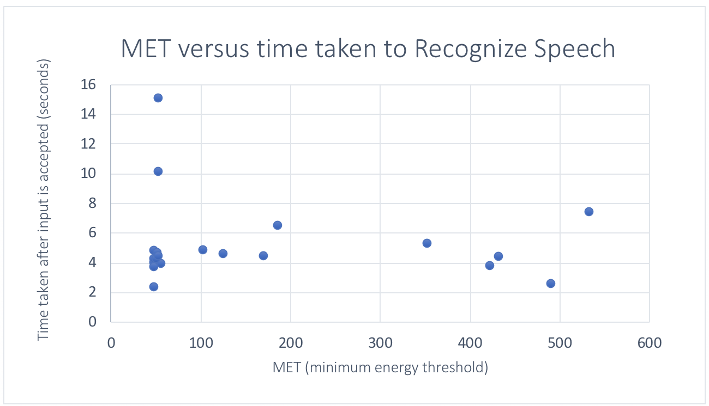
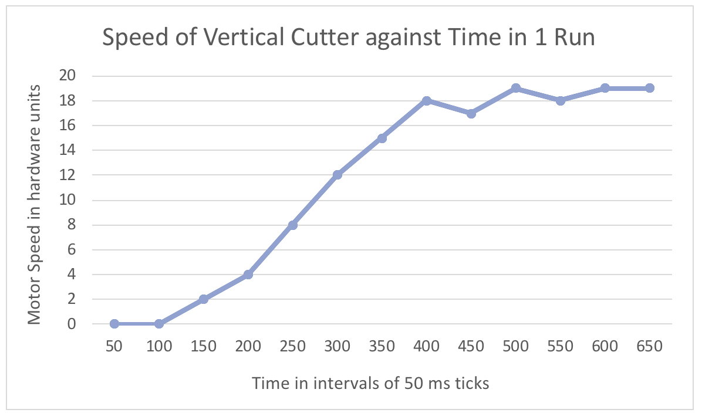
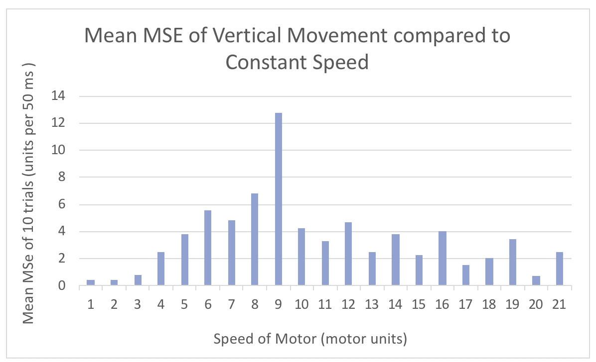
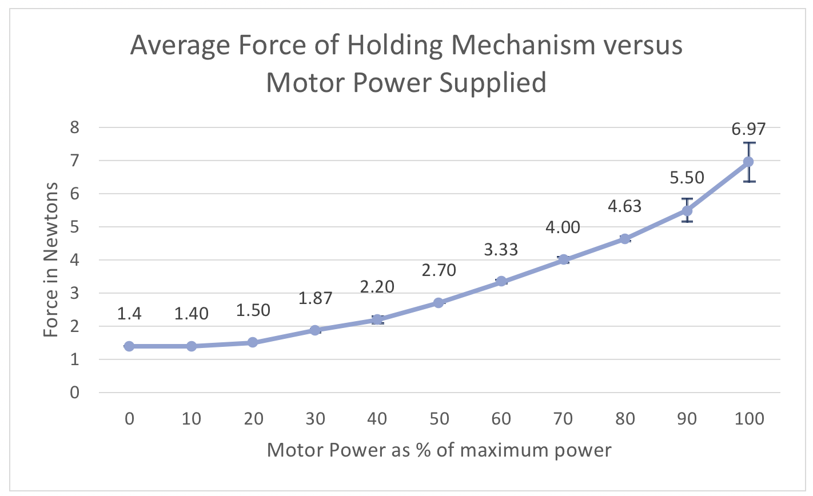
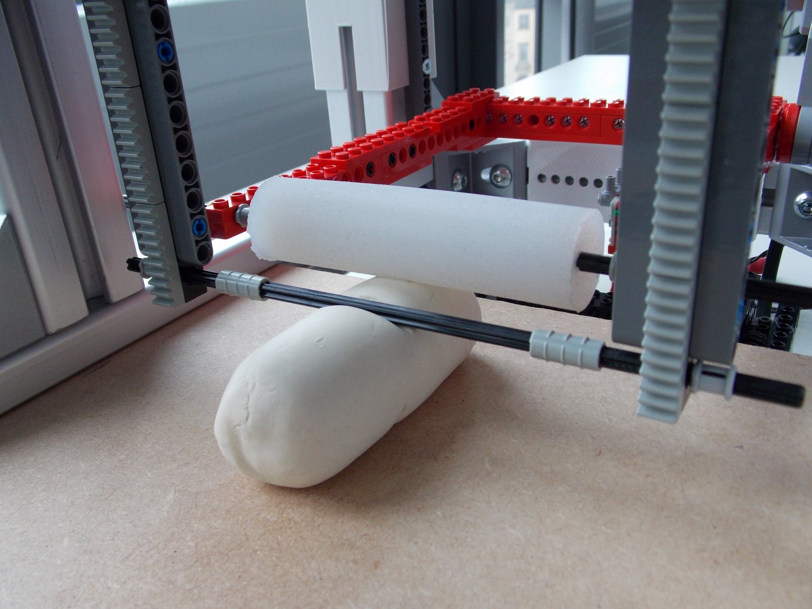

We ran tests on SousChef speech recognition software and major hardware components.
Evaluation and Testing
Speech Recognition
SousChef's speech recognition software is functional at the prototype level but can be further perfected to a higher standard for the final product. The speech recognition functionality was tested over a range of noise levels, and our testing recorded the time taken to recognise speech and the overall success/fail rate of the software, where a fail is an incorrect parse and a success is a correct parse of the intended command.
Both tests utilised a MacBook built-in microphone. MacBook microphones are mainly used for speech capturing purposes, for example with Siri or FaceTime, thus the MacBook microphone we tested on should be comparable to an entry level microphone that specialises in speech. For a final product, a higher quality microphone specialising in dictation is ideal.
Success Rates versus Environment Noise Level
10 trials of the software were run in both a noisy environment (where the Sphinx software reported an average MET, minimum energy threshold, of 286) and a quiet environment with an average MET of 49. The MET represents the perceived level of sound in the current environment. If the software recognises the given command, "Give me five slices", and reports back that the user requested "five slices", the trial is categorised as a success. If the software fails to recognise the dictated command or fails to recognise the starting command, "Hey Chef!" then the trial is categorised as a fail. Further testing could be run with different commands. The same voice actor was used for these tests.
Quiet Room Trials
Trial
MET
"Hey Chef!"
Correct Command
1
55
S
S
2
47
S
S
3
47
S
F
4
47
S
S
5
50
S
S
6
47
S
S
7
49
S
S
8
52
S
S
9
47
S
F
10
52
S
F
Noisy Room Trials
Trial
MET
"Hey Chef!"
Correct Command
1
352
S
S
2
102
S
S
3
431
S
S
4
185
S
S
5
489
S
F
6
421
S
F
7
124
S
F
8
52
S
S
9
169
S
S
10
532
S
F
The data shows that the software is always successful accepting the start command, "Hey Chef!", but only successful interpreting the correct command 6/10 times in the noisy room and 7/10 times in the quiet room. The data suggests that the SousChef speech recognition works better in quiet rooms, as the program failed to correctly recognise the test phrase at the highest MET values of 532 and 489, however more testing would be necessary to draw any strong conclusions, especially since the program still failed at some very low MET values in the quiet test. The plot below summarises the raw data:

The plot shows that failures occur at all energy threshold sound levels, but more failures occur at higher MET levels and most successes occur within the lower range of MET levels, with the exception of the outlier with an MET of 431. This suggests that although successes can occur at all noise levels, the SousChef's current speech recognition program is best used in a moderate to low noise environment. This should not be a problem for actual usage- the PyPI speech recognition package reports that the average quiet room has MET values between 0 and 100, which reflect normal usage in a kitchen [1]. For comparison, the noisy room reported average MET levels of 286 and over 15 other people were in the room as tests were conducted. It is unlikely that the average user would have that many people creating noise in their kitchen during food preparation.
Running Time
A quick runtime is a necessity for a kitchen appliance intending to aid the chef in meal preparation. Throughout our success tests, we tracked, using the Python time package, the time that SousChef took to process the given command after "Hey Chef!", and then output the command that it heard. We then plotted this data, which includes both success and fail trials, against the reported MET for the given trial.

The data shows there is no real correlation between the time the SousChef takes to recognise a command and how noisy the environment is. After removing the two outlier trials that took times of 14 seconds and 10 seconds, the average time taken for the SousChef to reach success or failure is 4.5 seconds. Thus, regardless of the noise level, the SousChef will always complete the speech recognition to a point of failure or success within a reasonable time.
Movement of Physical Components
Vertical Cutting Movement
We tested how well our power regulating algorithm for the vertical cutting movement worked by running our algorithm at different target speeds for 10 trials each at 10 different speeds, measuring the discrepancy between target speed and actual reported speed. There was no item blocking the cutter. We accomplished this by then taking the mean squared error (MSE) of each 10 different speeds, using the data from the 10 trials from each set speed.
The two main conclusions that were drawn from these tests were:-
That that cutting mechanism requires a delay time of around 400 ms to reach the target constant speed. Thus, we discarded the first 7 measurements of each run of the algorithm of the 10 trials when calculating the MSE. This can be seen in the graph below.

That there is no obvious trend to the speed impacting the MSE of the vertical movement.

In the graph, 1 unit = 6.9 mm2/s2 as measured from the encoder with callipers. Clearly speed 9 is an outlier, and lower speeds appear more accurate however that is likely due to the limitations of the angular resolution. The tests were conducted with a fully charged battery pack. It is possible that noise in the data can be attributed to the battery pack losing charge, or not being able to supply a consistent voltage. Overall, the data shows that using higher speeds of the motor for faster cuts does not overly impact the functionality of the vertical movement, and the vertical cutting movement functions as expected, considering how small the actual error is in mm.
Holding Mechanism Force
We tested the force that the holding mechanism applies to the held object as a function of motor power. The force of the holding mechanism was calculated for values from 0% to 100% of the motor power in increments of 10%. A digital scale was placed on the cutting board under the silicon roller to measure the force applied (we converted the weight to Newtons). We measured each percentage of motor power against the scale three times, resulting in data points that are the averages of three trials at a tested percentage.

At the highest powers, the standard deviations are high, whereas at lower motor powers the standard deviation is low, and in most cases below 80% power there is almost no deviation in the values. This is due to overheating in the power board, reducing its power output over time. At power levels of 80% and below, there is little to no overheating, thus in our cutting process we will choose a power of 80% as this is the highest possible force applied that maintains consistency and does not overwhelm the power board. Tests were run with a full battery pack.
Unfortunately, this test does not fully cover the functionality of the holding mechanism. While our intuition from feeling and working with the silicon roller tells us that the power is enough, it would be necessary to run a few more tests with the holding mechanism in order to draw again conclusions about its actual use-case functionality. Especially tests such as:
Testing how long the motor can run at 80% before overheating starts to make an impact on the force applied;
The effect that battery charge has on holding power, and how we could mitigate the impact that low battery has on the overall functionality of the holder;
How much force is actually required to hold down certain vegetables - is 80% a necessary amount of force or can the mechanism function the same on most vegetables with less power?
Horizontal Drift Movement of the Cutting Board
Potential drift of the cutting board was questioned to be an issue, so we ran tests on the movement of the cutting board to explore whether the amount of drift from multiple uses would impact functionality of SousChef. To calculate the impact of drift, we measured the total drift after 2 full meters of travelling by running the cutting board movement back and forth 20 times, with 19 direction changes, for 10 cm each run without reset. The resulting displacement was less than 1 mm. Thus we say that cutting board drift is not an issue.
User Testing
Playdoh Cutting
We tested the SousChef prototype's cutting motion with an axle in place of a blade on Playdoh.

As can be seen from the photograph, the holding roller does not prevent the cutting functionality. Because we were not able to test using actual food products at the time, more testing would be necessary to determine how the roller would function with vegetables. However, we are confident from our tests with the roller motor that it should be strong enough to hold the item sufficiently, and in the case that it is not strong enough, then using a different motor would solve the problem. Due to the connection of the axle to the lego tracks, the cutter was not able to make contact with a small section of the Playdoh at the bottom. This would not be a problem in the final product, as a blade would replace the axle and be placed to make full contact with the cutting board.
Speech Recognition
During our first sets of speech testing as explained in the above sections, we had the same voice actor dictate each trial with the same command for consistency. After this, we ran a user test that reflects real usage of the product by having 6 members of the team run the SousChef speech recognition program with each member dictating a different command. As expected, SousChef struggled with soft voices, but still successfully classified the majority of users in only one trial: of the 6 different users, the program successfully recognised 4/6 member's commands.
Main Areas of Improvement
For clarity, this section covers the improvements that should be made on the existing features of SousChef.
Speech Recognition
Failure of the speech recognition software could be related to the Sphinx package. For higher and more predictable success rates, more extensive options that could be explored in future development, such as:
Dynamic wake word sensitivity adjustment - combating unpredictable environment noise levels by adjusting the model's wake word sensitivity automatically depending on the current noise level of the room. Currently the model's wake word sensitivity is set to a default, and the ideal threshold is determined by a number of factors, like microphone quality, environment noise, and the user's speaking volume.
Changing user language/dialect - allowing support for other languages or dialects(for example, the choice between US or UK english) would require adaptation of the SousChef speech recognition software, but it would improve the success rate for those without a British accent. Sphinx includes the option to use different speech recognisers for different language codes [1].
In the actual product, using a different, more advanced speech recognition package and an external microphone could drastically improve success rates and speed.
More tests should be run, with varying dialects and languages when support for this is added. To truly be accessible, having language support is a necessity and SousChef will have to provide this in the future. This was especially obvious when we did user testing with different group members and voices.
Hardware
Testing was a challenge with the limitations we had during prototype production.
Speed of the motors and safety should be investigated more thoroughly. Realistically, the whole cutting process takes much longer than acceptable for an appliance meant to improve food preparation efficiency. Much stronger motors would need to be fitted to both the cutting board and the vertical movement arms in order the make the product useful. With stronger motors and sharp blades, safety becomes a bigger issue.
Due to unprecedented circumstances, there are substantial parts of the prototype that we were unable to complete. As a result of this, there is a lack of testing on many components of SousChef.
Incomplete parts of the prototype and incomplete testing include:
The integration between speech recognition, vision, the physical hardware and the UI.
Safety features and thus safety testing on these features.